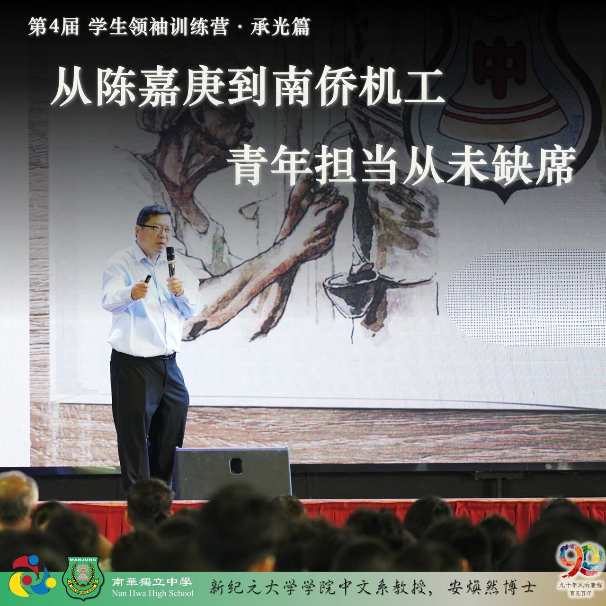
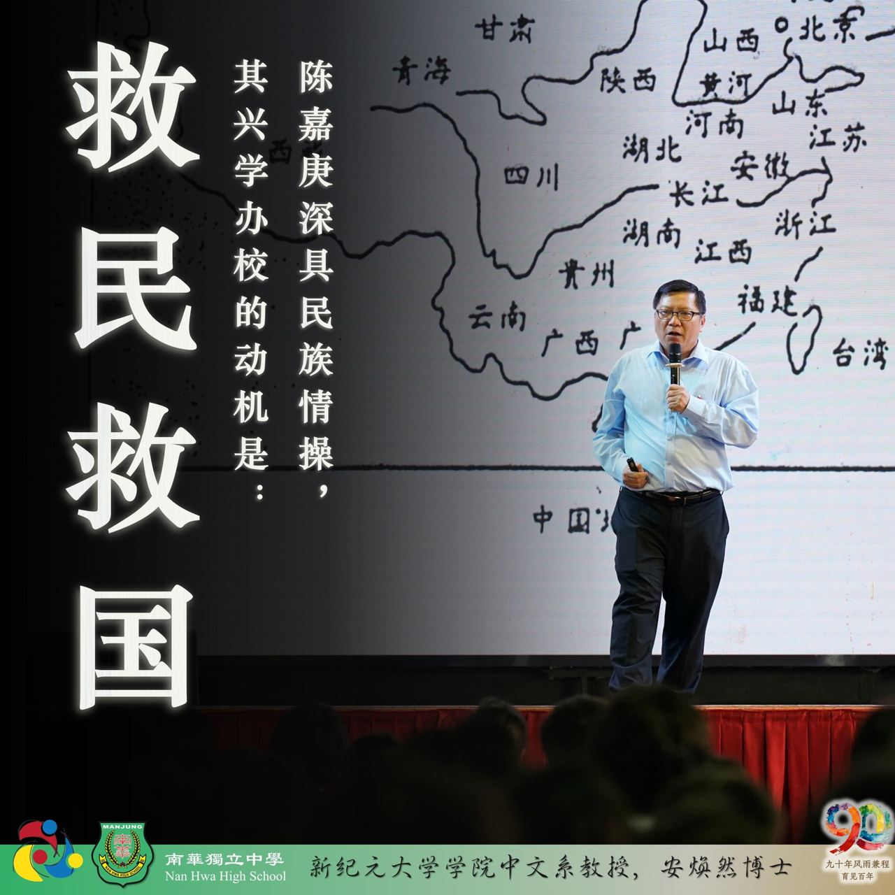
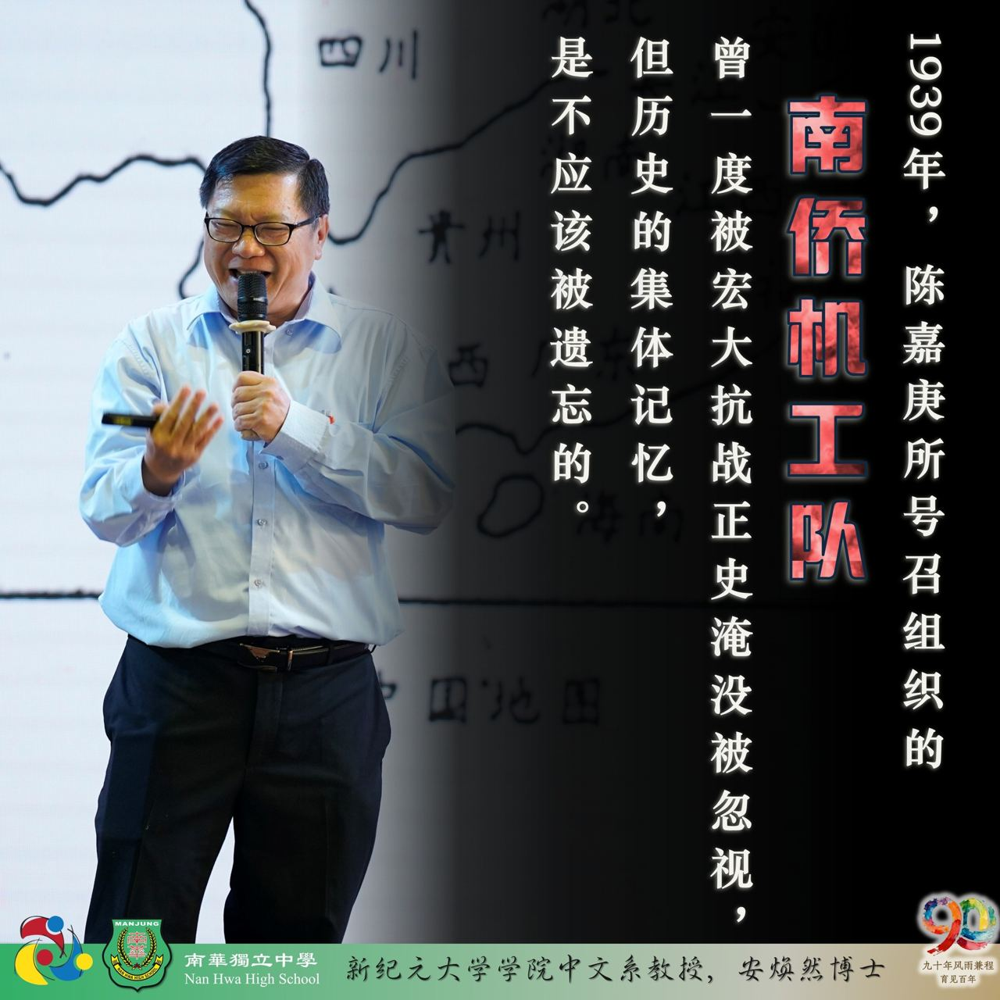
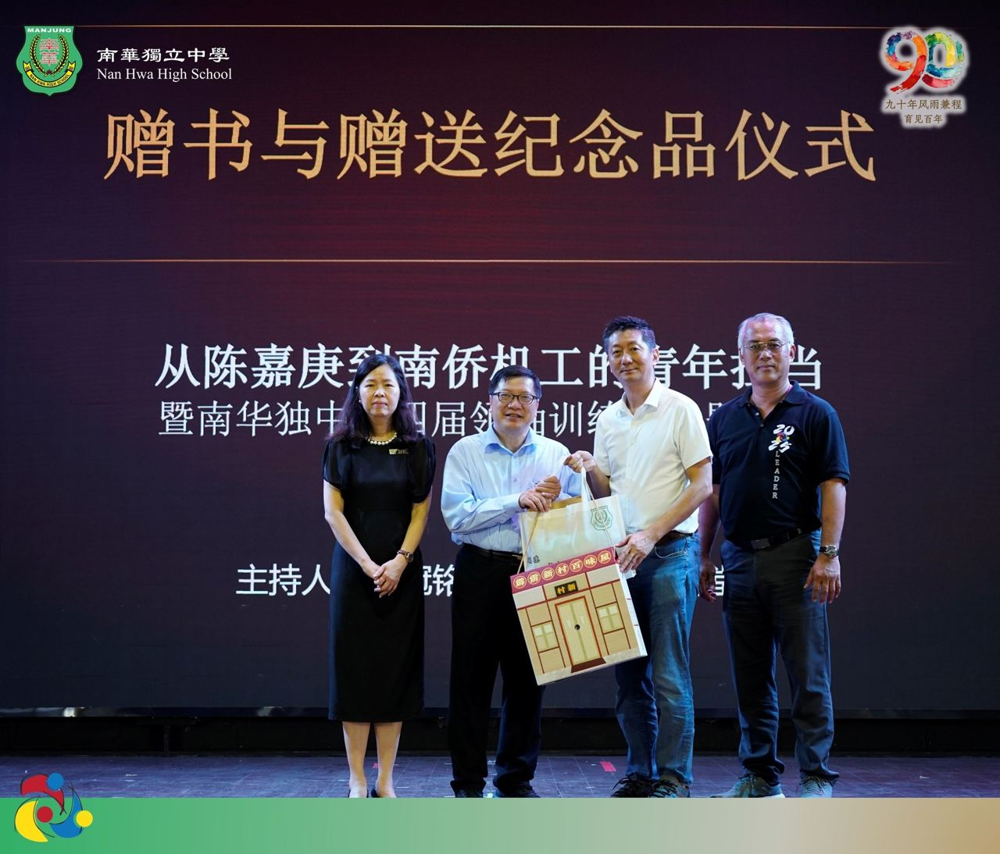

第四届学生领袖训练营·承光篇
第四届学生领袖训练营·承光篇
专题讲座系列报导之三
安焕然教授——
从陈嘉庚到南侨机工，青年担当从未缺席
"南洋社会造就了陈嘉庚，而陈嘉庚也滋养和改造了南洋华侨华人社会。"上述言论引援自前辈学者的定论，同时也正式打开了第四届学生领袖训练营·承光篇专题讲座系列第三场的格局。此讲座由新纪元大学安焕然教授莅临主讲，讲题《从陈嘉庚到南侨机工的青年担当》，为全校师生打开了一扇通往百年华教根脉的大门。
“陈嘉庚精神” 不只是毁家兴学
"陈嘉庚深具民族情操，其兴学办校的动机是'救民救国'，非常单纯。"安焕然教授开门见山，指出世人谈陈嘉庚，惯以"毁家兴学"、"倾家兴学"概括，却遮住了其教育思想的核心——"实学致用"。
陈嘉庚兴学，首在培养"有实学才干、有出路的人才"。他重视科技、工商与职业教育，强调五育并重——"学校不但教其识字而已，其他如智识思想、能力、品格、实验、体育，以及其他课外活动，均须注意与正课相辅而行。"他对师资要求严格，"聘好师资，刻不容缓"，并以优厚待遇回报有功之师；厦大建校初期，他甚至拒纳洋人建筑师的设计，亲自"以步代尺，实地勘测"，就地取材，主张"节俭而以实用为原则，却又要极富融合、创新的美感"。
安教授援引大量史料，还原了一个不沽名钓誉的实干教育家形象："陈嘉庚不是一个只会捐资而不知办学的平庸华商。"
话锋一转，便是3000余名青年的历史重量。1939年，陈嘉庚号召组织"南侨机工队"，3000余名来自新马各地的青年踏上滇缅公路，为中国抗日后援服务。其中有放弃舒适生活的，有不敢告诉家人悄然离别的，有跪拜家门哭诉"忠孝不能两全"的，还有女扮男装的当代花木兰。这支队伍不分种族——当中有马来人、印度人——"是为争取和平而战的正义之师"。
安焕然教授以亲历田野调查的方式呈现这段历史。他忆述多年前陪同云南电视台摄制队走入士乃江夏堂，聆听耆老讲述殷商黄子松如何出榜招收青年、借出罗里供机工练习驾驶；"一位江加浦来的老人激动地唱起了当年的抗日歌曲，连云南电视台的摄影师也禁不住拍掌"；另一位耆老哭着述说日军在当地的暴行，"深怕我们不知道这一段历史悲剧"。
抗战胜利后，3000余名机工中只有约千人顺利返乡，千余人牺牲或失踪，更有千余人滞留中国，命运各异。"关于这段可歌可泣的历史记忆，在宏大叙事的抗战正史中，曾一度被忽视忽略。"安教授说，"但历史的集体记忆，是不应该被遗忘的。"
那段历史，恰好发生在当场
安焕然教授梳理陈嘉庚精神在马来西亚的传承脉络时，将目光落回眼前这所学校。"南华独中呢？有谁？"讲台上，话锋一转。1970年，南华独中只剩下17名学生，去留之际，有一位南洋大学政治经济系毕业生站了出来。他不仅出资出力，更于1981年慷慨捐献7英亩土地建设新校舍，让南华成为全马第一所设有游泳池的独中。这个人，祖籍福州古田，家在实兆远，名叫颜清文——安教授称其为"南华独中之父"。
颜清文之子，是今天南华独中的董事长颜登逸先生。此时此刻，台下有一个人正认真聆听父亲与这所学校的故事。华教薪火的传递，不只是历史叙事，而是活生生地在当场发生。
讲座结束后，举行赠书与赠送纪念品仪式。安焕然教授将其著作赠予校方，以文字将这段历史长存于南华校园；陈丽冰博士代表学校回赠纪念品，致谢这份珍贵的文化馈赠。
出席者包括有：南华独中董事长颜登逸先生、董事总务何添胜先生、校长陈丽冰博士、南华独中全校师生。



